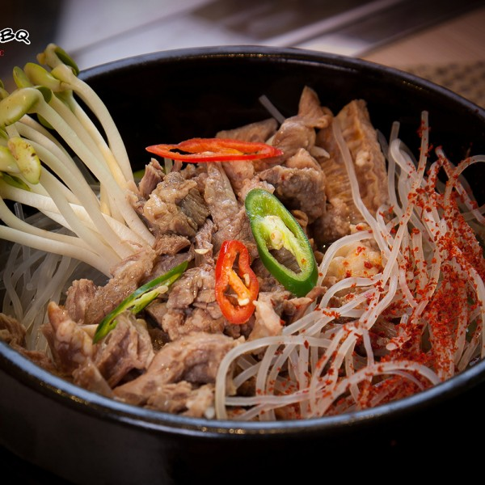

Canh thịt bò cay Hàn Quốc
Canh thịt bò cay Hàn Quốc nhìn có vẻ giống với canh sườn bò Hàn Quốc nhưng thật ra lại không phải như vậy. Mỗi món có một đặc trung riêng và mang theo phong cách thưởng thức riêng biệt. Chắc chắc vị cay mà các bạn nếm trong bát canh thịt bò cay tại K's sẽ khác hoàn toàn so với những bát canh thịt bò cay của những nơi khác.